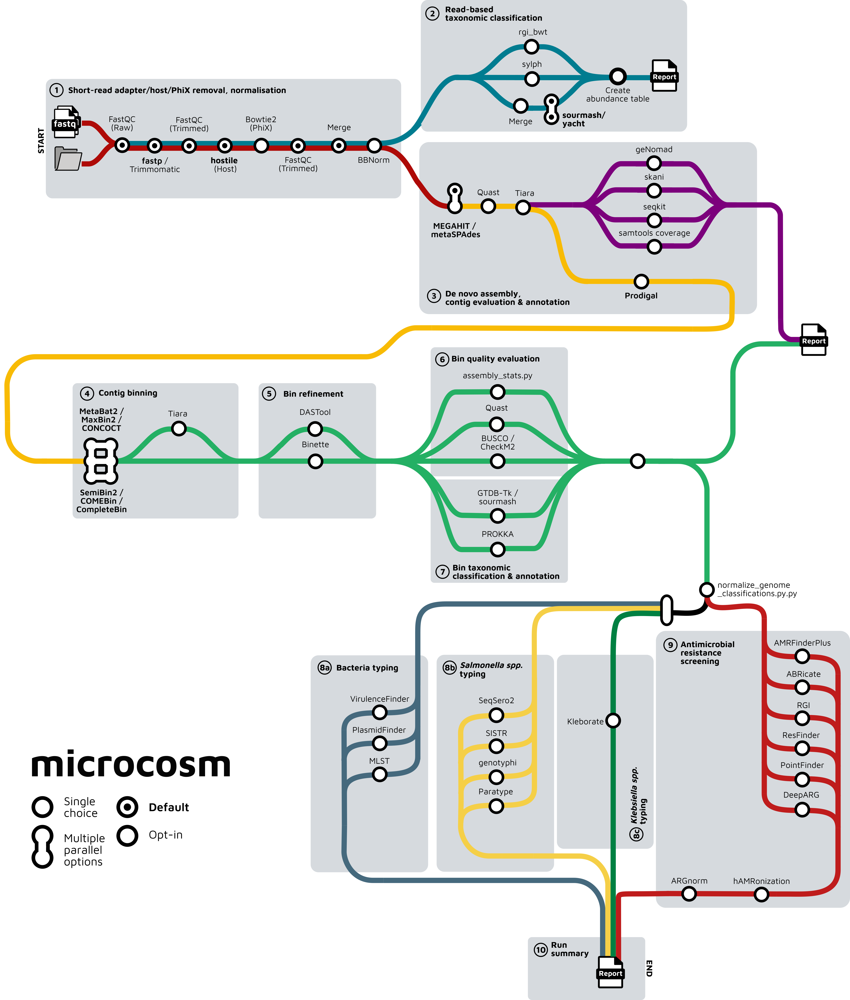

Pipeline overview¶

microcosm has three routes that share the same read preprocessing and the same report. A run takes one route.
flowchart TD
R[Paired FASTQ] --> P[Preprocessing<br/>FastQC · fastp · hostile]
P -->|--enable_readbase| RB[Read-based profiling<br/>sourmash + YACHT · sylph · RGI bwt]
RB --> PP[Post-processing<br/>standard · phyloseq · taxburst]
P -->|default| A[Assembly<br/>MEGAHIT · metaSPAdes]
AI[Pre-computed assemblies<br/>--assembly_input] --> M
A --> M[Read mapping, once<br/>Bowtie2 / BWA-MEM2]
M --> C[Contig analysis<br/>Pyrodigal/Prokka · geNomad · Tiara · skani]
M --> B[Binning + refinement<br/>MetaBAT2 · MaxBin2 · COMEBin · SemiBin2 · Binette]
B --> Q[Bin QC, annotation, taxonomy<br/>CheckM2 · BUSCO · GUNC · Prokka/Bakta · sourmash/GTDB-Tk]
Q -->|--enable_bacterial_downstream| BA
G[Genome FASTA<br/>--genome_input] --> BA[Bacterial genome analysis<br/>typing · AMR · Klebsiella · Salmonella]
PP --> MQ[(MultiQC report)]
C --> MQ
Q --> MQ
BA --> MQ
Stages¶
# |
Stage |
Tools |
Route |
Page |
|---|---|---|---|---|
1 |
Read QC and decontamination |
read, assembly |
||
2 |
Read-based profiling |
read |
||
3 |
Assembly and contigs |
MEGAHIT, metaSPAdes, QUAST, SeqKit, samtools, Pyrodigal / Prokka, geNomad, Tiara, skani |
assembly |
|
4 |
Read mapping (once per assembly) |
assembly |
||
5 |
Binning and refinement |
MetaBAT2, MaxBin2, COMEBin, SemiBin2, CONCOCT, VAMB; Binette / DAS Tool |
assembly |
|
6 |
Bin quality |
CheckM2, CheckM, BUSCO, GUNC, QUAST, |
assembly |
|
7 |
Bin annotation and taxonomy |
assembly |
||
8 |
Bacterial genome analysis |
MLST, VirulenceFinder, PlasmidFinder, AMRFinderPlus, ABRicate, RGI, ResFinder, DeepARG, hAMRonization, ARGnorm, Kleborate, SISTR, SeqSero2, Mykrobe, GenoTyphi, Paratype |
assembly, genome input |
|
9 |
Report |
MultiQC, software versions, run summary |
all |
Design choices¶
Containers for every step. Each process has a pinned Singularity/Apptainer/Docker image and a Conda definition, so results are reproducible across machines.
Databases are optional where possible. A missing database is downloaded at a fixed version and saved in
<outdir>/Databases/for the next run; large references (sourmash, YACHT, sylph, GTDB-Tk) stay under your control.Map once. Reads are mapped to each assembly a single time; contig coverage and binning share the BAM.
Every step can be switched off (
--skip_<step>) and every tool accepts extra arguments (--<tool>_args).Resumable.
-resumereuses finished steps after a failure or a parameter change.